Tips Clínicos
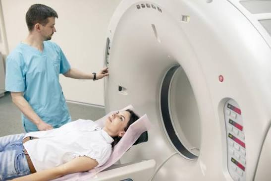
Rol del Practicante/Interno
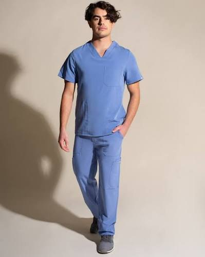
Presentación Personal
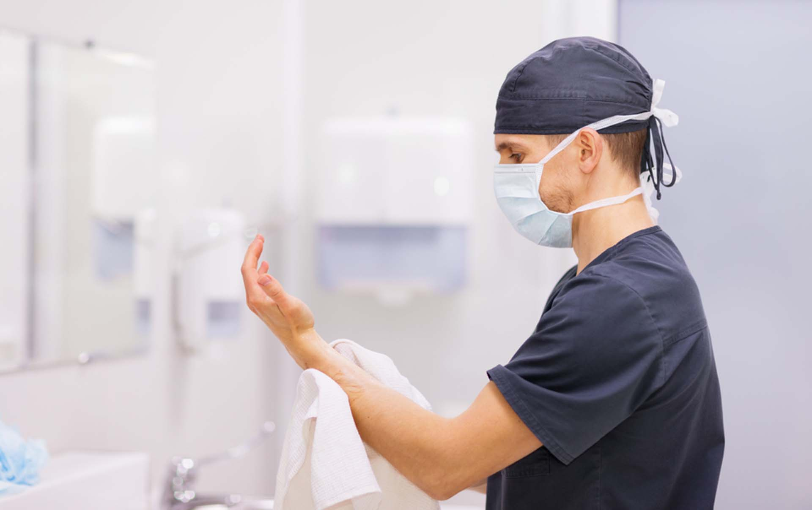
Lavado de Manos
Anamnesis
Trato hacia el Paciente
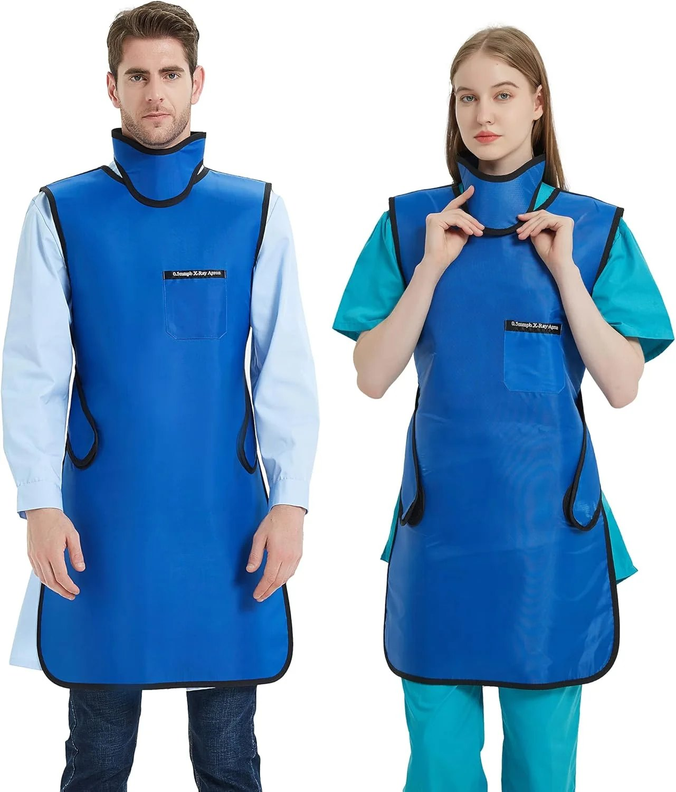
Protecciones
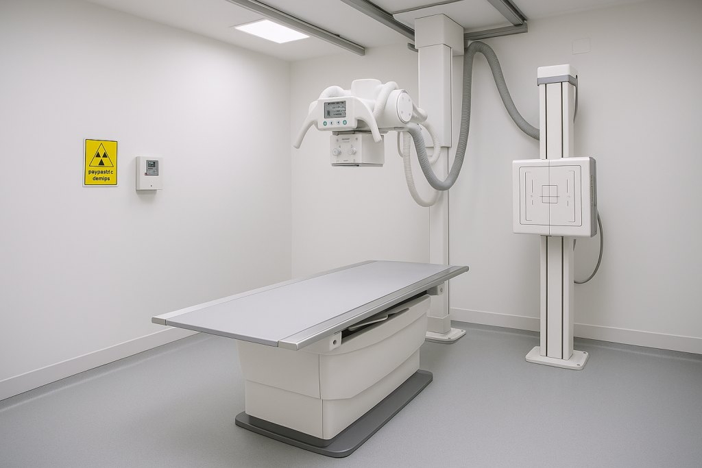
Salas de Examen
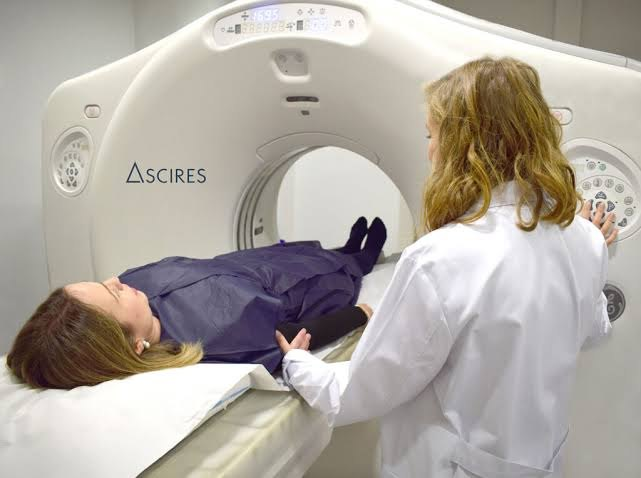
Exámenes
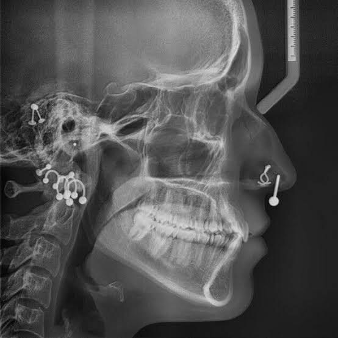
Artefactos y Metales
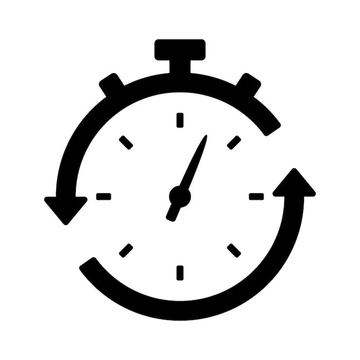
Tiempos
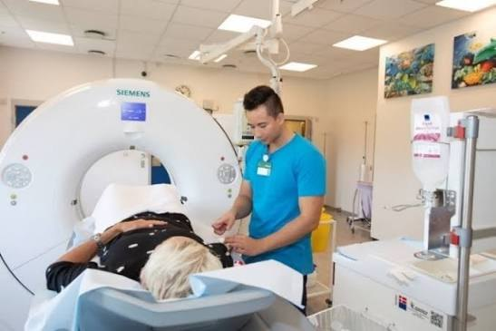
Rx, Escáner, Eco y Resonancia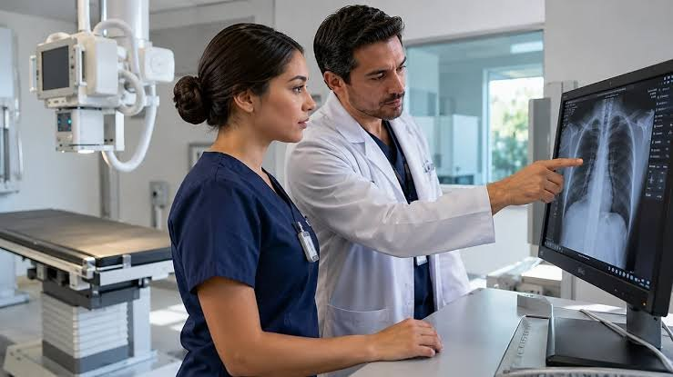
Aprendizaje ActivoRol del Practicante/Interno
Estar en práctica o internado es el puente entre la teoría y la realidad hospitalaria. Tu papel es apoyar al equipo en la recepción del paciente, preparar la sala, ayudar en el posicionamiento y aprender el ritmo de trabajo en Radiografía, Escáner, Ecografía y Resonancia, siempre respaldado por tu tutor.
Nadie espera que lo sepas todo el primer día, pero sí que tengas buena disposición, respeto por el paciente y criterio para pedir confirmación antes de disparar un equipo, pasar contraste o ingresar a alguien a sala.
• Para todas las áreas: Anda siempre con una libreta pequeña y un lápiz en el bolsillo; anotar los trucos de cada sala te salva de preguntar lo mismo dos veces y demuestra interés. Si tienes dudas, consúltalas con tu guía lejos del paciente para mantener su tranquilidad.
• En Radiografía: Atrévete a posicionar y colimar tú mismo, pero pídele a tu tutor que le dé una mirada rápida antes de salir a disparar.
• En Escáner y Resonancia: Ofrece ayuda para acomodar al paciente en la camilla, poner cojines o bobinas y dejarlo cómodo mientras tu guía configura la consola.
• En Ecografía: Mantente atento a la pantalla y ten a mano el gel y el papel; observar cómo el operador busca cada estructura te entrena el ojo clínico.
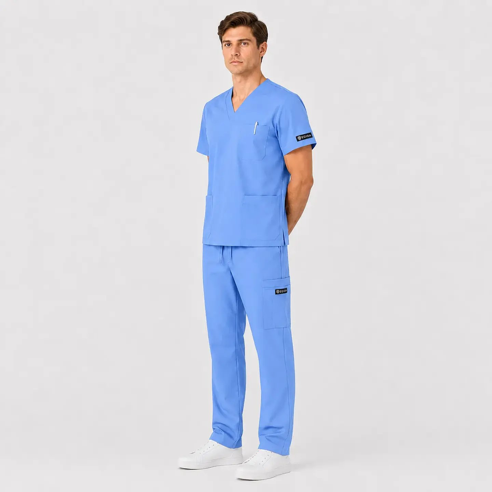
Imagen Profesional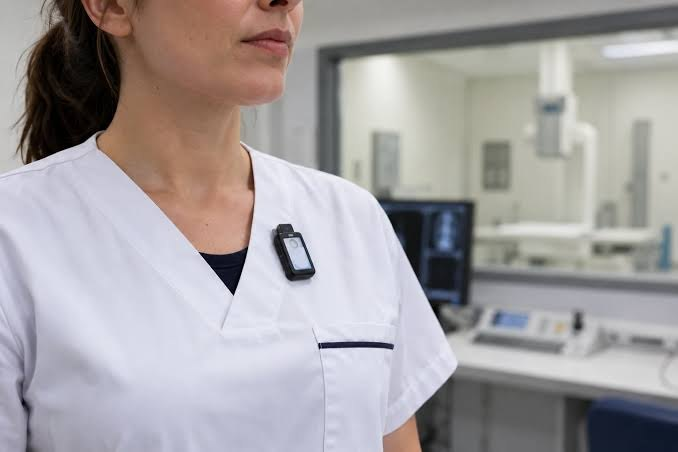
Comodidad y SeguridadPresentación Personal
Tu presentación es tu primera carta de presentación frente al paciente y al equipo de salud. Más allá de verse ordenado, cumple una función directa de higiene, comodidad y seguridad en todas las unidades de Imagenología.
Uniforme limpio, calzado cerrado y cómodo para caminar todo el turno, cabello bien tomado, uñas cortas sin esmalte, cero accesorios en manos o muñecas y tu credencial junto al dosímetro siempre visibles.
• Para todas las áreas: Deja anillos, pulseras y reloj en tu bolso antes de entrar al servicio; así evitas rasguñar sin querer a un paciente al ayudarlo y puedes lavarte las manos sin obstáculos.
• En Radiografía y Escáner: Acostúmbrate a revisar cada mañana que llevas puesto tu dosímetro en el uniforme; que se vuelva tan automático como ponerte la credencial.
• En Ecografía: Evita mangas largas o sueltas que terminen manchadas con gel al pasar sobre el paciente.
• En Resonancia: Haz el hábito de vaciar tus bolsillos antes de acercarte a la sala del imán; llaves, monedas, tijeras o el celular pueden convertirse en un peligro real o echarse a perder al instante.
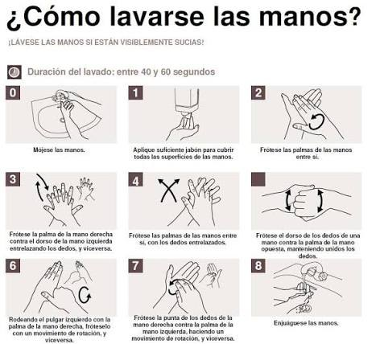
Cuidado Mutuo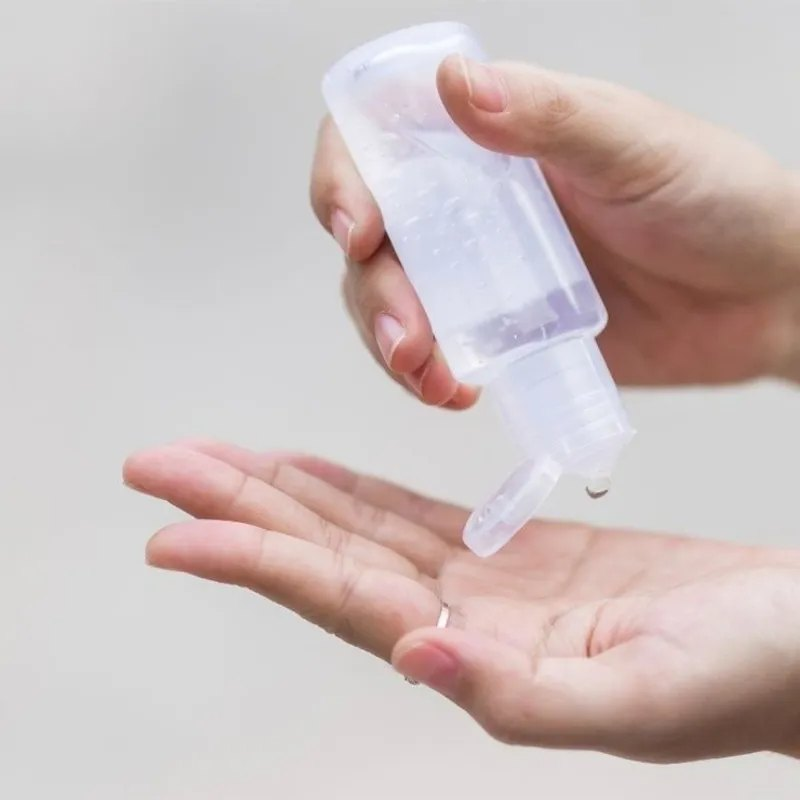
Hábito ClínicoLavado de Manos
Es el gesto más simple y poderoso para cuidar tanto a los pacientes como a ti mismo. En Imagenología pasan decenas de personas por turno por las mismas camillas, equipos y accesorios, por lo que mantener las manos limpias corta de raíz cualquier contagio.
Alternar el lavado con agua y jabón y el uso de alcohol gel en cada atención, recordando que los guantes se usan para tareas puntuales pero jamás reemplazan la higiene de manos.
• Para todas las áreas: Crea el reflejo de usar alcohol gel justo después de acomodar al paciente y antes de ir a tocar el teclado o el mouse de la estación de trabajo.
• En Radiografía: Higieniza tus manos cada vez que manipules chasis, detectores o bandas de sujeción entre un paciente y otro.
• En Escáner: Lávate bien las manos con agua y jabón antes de ponerte guantes para canalizar una vía venosa y apenas te los saques al terminar.
• En Ecografía y Resonancia: No olvides limpiar tus manos después de retirar el gel del paciente o de recoger bobinas, correas y fonos auditivos.
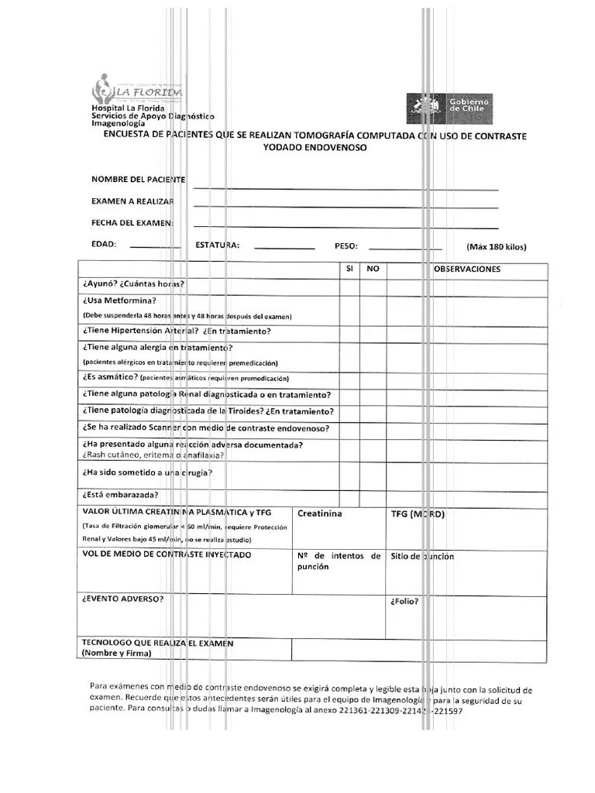
Prevención de ErroresAnamnesis
Es esa conversación breve pero clave antes de empezar el examen. Sirve para confirmar que estás atendiendo a la persona correcta, entender qué le pasa y asegurarte de que cumple con las condiciones de seguridad para el estudio.
Confirmar nombre completo y RUT, escuchar la historia del paciente con atención y verificar los requisitos propios de cada modalidad antes de pasar a la sala.
• Para todas las áreas: Haz preguntas abiertas para que el paciente te cuente con sus palabras qué le duele y de qué lado ("¿Cuál es la rodilla que le molesta?"); muchas veces así descubres que la orden médica venía cruzada.
• En Radiografía: En mujeres en edad fértil, pregunta siempre de forma amable y directa si existe alguna posibilidad de embarazo.
• En Escáner: Si el examen lleva contraste, confirma el ayuno, si es alérgico a algo, si toma medicamentos como metformina y revisa que tenga su examen de función renal al día.
• En Ecografía: Antes de acostar al paciente, asegúrate de que venga bien preparado (con ayuno si es abdominal o con ganas de orinar si es pelviana o renal).
• En Resonancia: Tómate el tiempo de repasar la encuesta de seguridad punto por punto; preguntar por cirugías antiguas, marcapasos o metales en el cuerpo es vital.
Trato hacia el Paciente
Quien llega a Imagenología suele venir con dolor, nervios o incertidumbre por un diagnóstico. Un trato amable, cercano y respetuoso calma al paciente y hace que todo el examen fluya mucho mejor.
Mirar a los ojos al saludar, presentarse por tu nombre, hablar en palabras simples sin tecnicismos innecesarios y cuidar siempre su pudor e intimidad.
• Para todas las áreas: Explica siempre lo que vas a hacer antes de tocar al paciente y ofrécele una mano al subir o bajar de la camilla; la confianza baja la ansiedad de inmediato.
• En Radiografía: Si el paciente viene adolorido por una caída o fractura, pídele que él mismo mueva la extremidad hasta donde pueda antes de acomodarla tú.
• En Escáner: Avísale antes de pasar el contraste que va a sentir un calorcito en el cuerpo y un sabor raro en la boca; saber que es normal evita que se asuste en medio del examen.
• En Ecografía: Tapa con sábana de papel las zonas que no necesitas descubrir y avísale antes de poner el gel si está frío.
• En Resonancia: Cuéntale que el equipo suena fuerte, dile más o menos cuánto va a durar y pásale el timbre en la mano asegurándole que lo estás viendo y escuchando todo el tiempo.
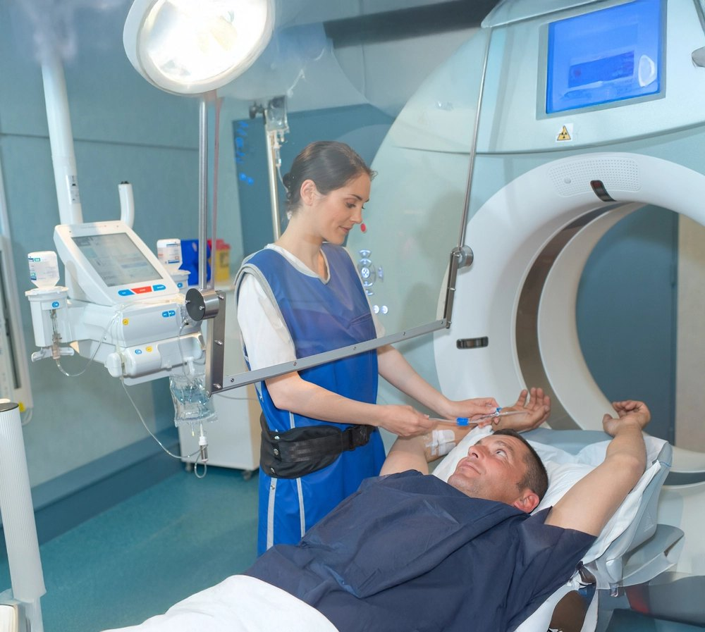
Cuidado del Paciente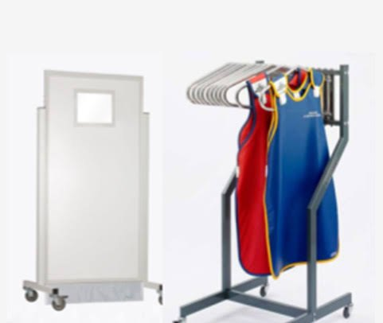
Prevención de RiesgosProtecciones
Cuidar al paciente y al equipo frente a los riesgos físicos de cada sala: ya sea usando la menor radiación posible, protegiendo los oídos del ruido o evitando caídas y lesiones en la camilla.
Aplicar el sentido común y los protocolos de seguridad según el equipo en el que estés trabajando, sin descuidar jamás al paciente mientras está sobre la mesa.
• Para todas las áreas: Nunca dejes solo ni sin sujeción a un niño, a un adulto mayor o a alguien mareado sobre la camilla; una caída en sala se previene estando atento.
• En Radiografía: Ajusta bien la luz del colimador solo a la zona que necesitas ver (recortar la foto después en el computador no reduce la radiación) y ponle delantal plomado al acompañante si debe quedarse adentro.
• En Escáner: No pongas protectores plomados dentro de la zona que va a escanear el equipo, porque el escáner compensará subiendo la radiación y echará a perder la imagen.
• En Ecografía: Usa siempre funda protectora en transductores endocavitarios y evita presionar fuerte sobre zonas muy inflamadas o sensibles.
• En Resonancia: Ponle siempre tapones o fonos al paciente para cuidar sus oídos y usa almohadillas para que sus manos o piernas no queden tocando directo las paredes del túnel.
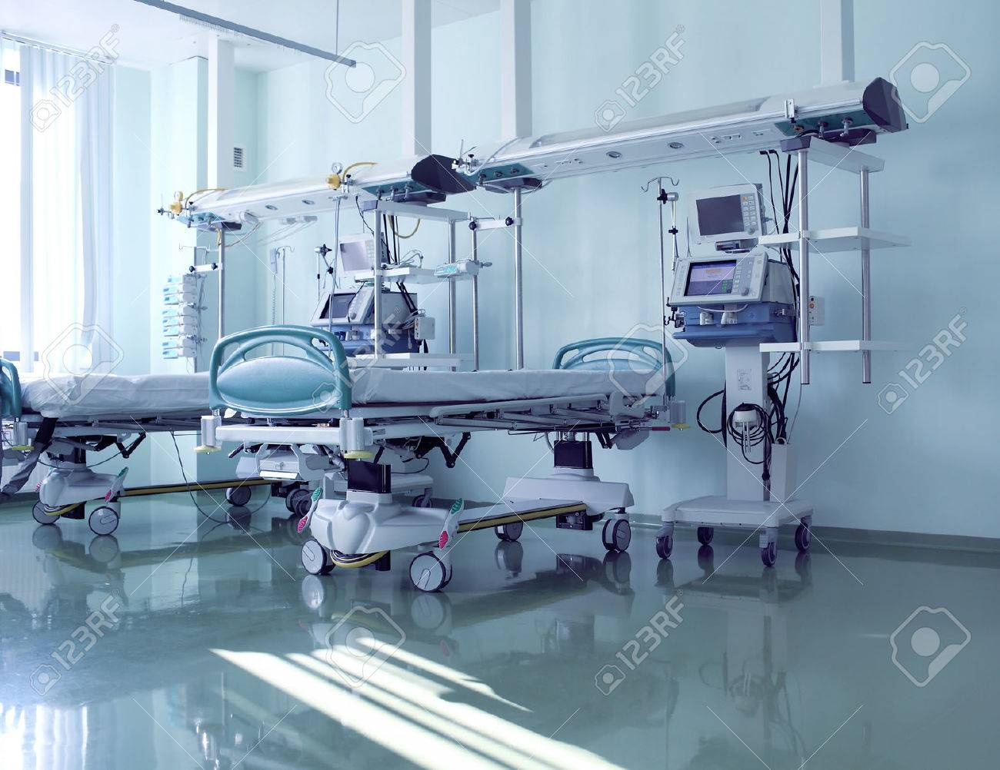
Orden en Sala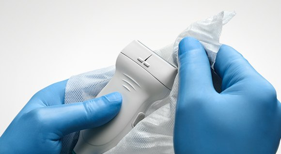
Limpieza y FluidezSalas de Examen
Tener la sala ordenada, limpia y armada antes de llamar al paciente marca la diferencia entre una atención estresante y una fluida. Además, mantiene un ambiente seguro e higiénico para todos.
Limpiar las superficies después de cada atención, cambiar la sabanilla de papel y dejar el equipo preparado según el examen que viene en la lista.
• Para todas las áreas: Mantén los cables ordenados y el piso libre de obstáculos para que ni el paciente ni tú tropiecen al moverse.
• En Radiografía: Deja el tubo centrado y limpia el detector digital con las toallas adecuadas sin rociarle líquido encima.
• En Escáner: Antes de hacer pasar al paciente, revisa que la inyectora esté lista y sin burbujas de aire, y que los apoya-brazos estén limpios.
• En Ecografía: Limpia el gel del transductor apenas termine el examen para que no se seque ni dañe el cabezal, y baja un poco la luz de la sala para ver bien la pantalla.
• En Resonancia: Deja conectada la bobina del estudio que sigue, asegúrate de cerrar bien la puerta de la sala al salir y recuerda que el carro de paro metálico nunca entra a la sala del imán.
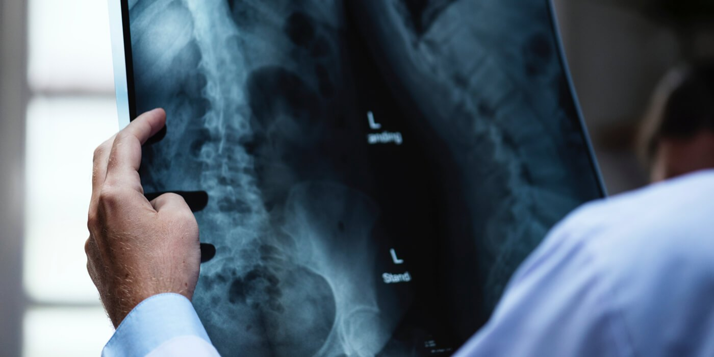
Criterio Clínico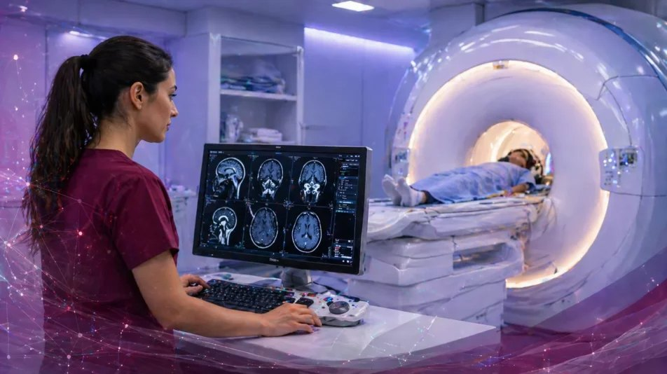
Revisión antes de DespedirExámenes
Cada estudio busca responder una pregunta médica. Más allá de apretar botones, importa asegurarse de que las imágenes salgan nítidas, completas y útiles para que el médico radiólogo pueda informar con seguridad.
Revisar siempre las imágenes en pantalla antes de despedir al paciente o sacarle la vía venosa, comprobando que no haya movimiento ni zonas cortadas.
• Para todas las áreas: Tómate diez segundos para mirar bien el resultado en el monitor mientras el paciente aún está en el vestidor; si algo salió movido o incompleto, es mucho mejor repetirlo ahí mismo que llamarlo de vuelta otro día.
• En Radiografía: Acostúmbrate a tomar siempre dos vistas en ángulo recto (como frente y perfil) en huesos y articulaciones, y pon siempre la marca de derecha o izquierda.
• En Escáner: Revisa en el barrido inicial que no hayas cortado ninguna parte de la zona pedida y mira los cortes en distintos planos antes de dar por cerrado el estudio.
• En Ecografía: Observa siempre cada órgano o hallazgo desde dos ángulos distintos y ajusta bien la profundidad y el brillo para que la imagen se vea clara.
• En Resonancia: Orienta los cortes siguiendo la forma real de la anatomía y confirma que las secuencias principales salieron nítidas antes de sacar al paciente del túnel.
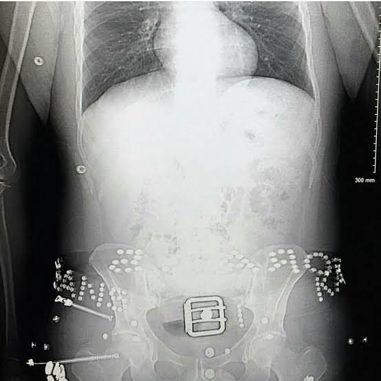
Preparación Previa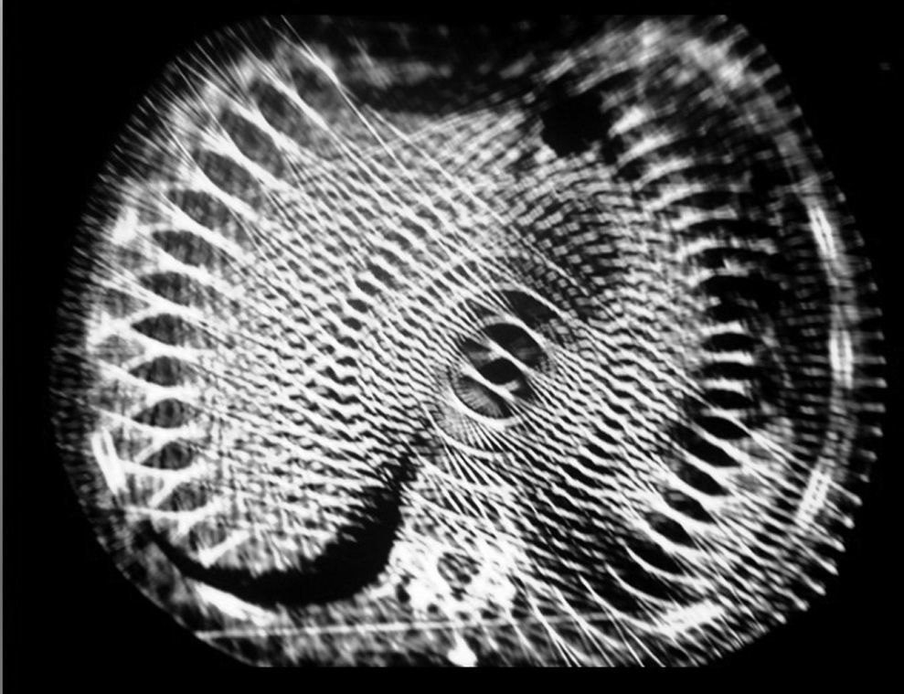
Imágenes LimpiasArtefactos y Metales
A veces una cadena olvidada, un broche o hasta poco gel en el transductor crean manchas, destellos o sombras en la imagen que pueden tapar una lesión o confundirse con algo que el paciente no tiene.
Anticiparse revisando bien al paciente antes de empezar, explicándole qué cosas debe sacarse o qué ropa conviene cambiar por una bata.
• Para todas las áreas: No te quedes solo con preguntar "¿Trae algo metálico?"; muchas veces la gente no recuerda un collar fino, un broche o un parche en la piel. Cuando tengas duda, mejor pasa bata de examen.
• En Radiografía: Pide retirar cadenas, aros, sostenes con broches o varillas, poleras con estampados plásticos gruesos y trenzas de pelo mojado sobre el pecho.
• En Escáner: Recuerda pedir que se saquen prótesis dentales removibles y aros en estudios de cabeza o cuello, y pide subir los brazos sobre la cabeza en estudios de tórax o abdomen.
• En Ecografía: Usa suficiente gel para que no quede aire entre el transductor y la piel, ya que el aire bloquea el sonido y deja sombras negras.
• En Resonancia: Pide cambiar toda la ropa por bata clínica y retirar maquillaje brillante, pinches, piercings y parches medicinales para evitar manchas negras en la imagen y prevenir quemaduras.
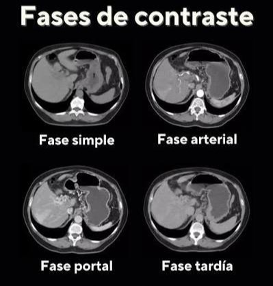
Sincronización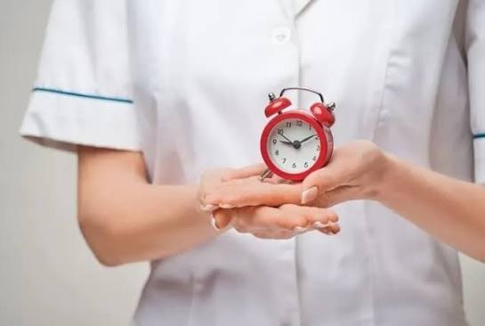
Organización del TurnoTiempos
En Imagenología el tiempo juega doble: por un lado está la organización de la agenda para que los pacientes no esperen de más, y por otro, la precisión técnica de disparar o escanear en el segundo exacto.
Ser puntual, preparar al paciente con calma antes de iniciar y coordinar bien la respiración o el paso del medio de contraste para lograr imágenes nítidas a la primera.
• Para todas las áreas: Llega unos 15 minutos antes de empezar el turno para revisar la lista de pacientes, priorizar a quienes vienen en ayuno o con mucho dolor y ensayar la respiración con el paciente antes de empezar.
• En Radiografía: Usa disparos rápidos en niños, personas mayores con temblor o estudios de tórax para que la respiración o un movimiento leve no salgan movidos.
• En Escáner: Cuida los tiempos de espera tras inyectar contraste para captar bien las arterias o las venas en el momento justo.
• En Ecografía: Sigue siempre un orden lógico al revisar los órganos para no saltarte nada y hacer un examen ágil y cómodo para el paciente.
• En Resonancia: Lanza primero las secuencias más importantes del estudio por si el paciente se cansa, le duele la espalda o siente claustrofobia hacia el final, e írale avisando cuánto falta.